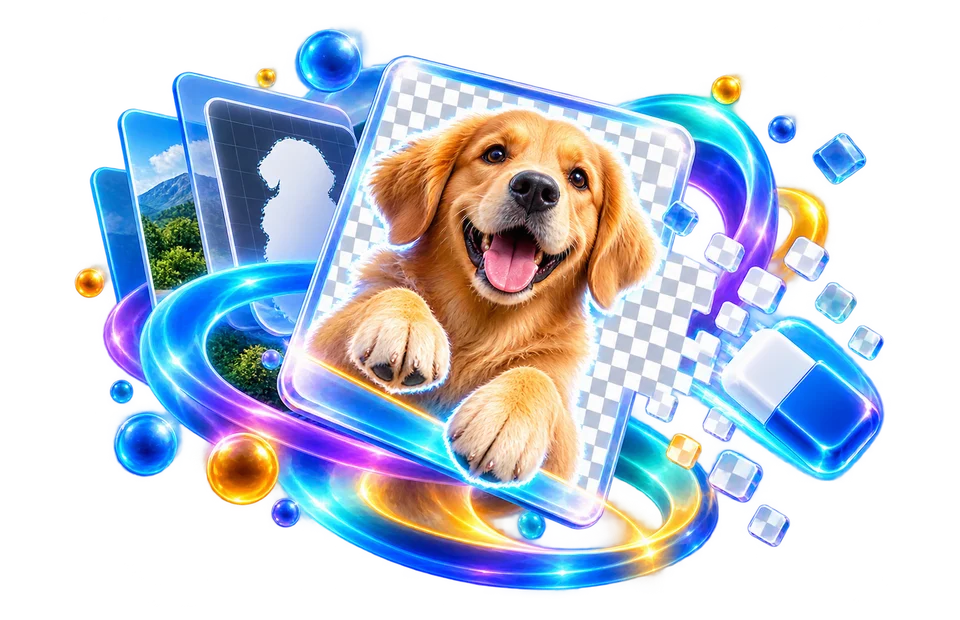

Upload an image with a clear subject
Try a product photo with a plain backdrop; inspect object edges against a checkerboard before exporting.
Remove image backgrounds with fast browser-based AI, refined edges, and transparent PNG output.
Background separation is most difficult where the subject and background share colours or when fine hair and transparent material overlap.

Try a product photo with a plain backdrop; inspect object edges against a checkerboard before exporting.
Create a transparent-background product or profile image.
Hair, glass and similar edges may need manual review.
Try a product photo with a plain backdrop; inspect object edges against a checkerboard before exporting.
A person against a similar-coloured wall is harder to isolate than a product against plain white. Look closely at flyaway hair, translucent fabric and fingers after removing the background.
Use the real tool above to verify the result. The example illustrates the workflow, not a guaranteed outcome.
A person against a similar-coloured wall is harder to isolate than a product against plain white. Look closely at flyaway hair, translucent fabric and fingers after removing the background.
Export to a format that supports transparency, such as PNG or WebP. Some formats flatten transparent pixels against a solid colour.
Place the result against both light and dark backgrounds to reveal halos and missing edges.
Edge pixels may contain a blend of foreground and original background colours; segmentation alone does not always remove that fringe.
Automatic segmentation may classify narrow or low-contrast details as background when confidence is low.
No. JPEG has no alpha channel; use a supported transparent format such as PNG when you need a cutout.

An automatic background remover does not understand a photograph the way a person does. It predicts which pixels belong to the subject and which belong to the background. When the two have similar colours, or when hair, glass and shadows overlap, that boundary becomes uncertain. A clean product shot against a plain wall may be easier than a person holding a fine mesh object outdoors. DoKitly offers a fast model and an optional detail model, with local processing after model download. Neither should be described as flawless. A trustworthy workflow helps users inspect the mask and choose what works on their particular image.
Think of a small shop owner preparing a listing photograph of a mug. They want to place the mug on a clean background without a distracting kitchen behind it. Automatic removal can be a useful first pass. After processing, switch the preview between light and dark backgrounds to see whether white halos or leftover colour surround the handle. Look through the hole in the handle too—small internal gaps are easy to miss. For a portrait, zoom into the hairline, glasses and shoulders. If the cutout has lost important details, keeping the original or editing the mask manually is better than publishing an obviously artificial result.
Transparent files need the right export format. PNG supports alpha transparency, while JPEG does not; saving to JPEG normally adds a solid background. Also remember that model quality is separate from image input quality. A blurry, low-resolution source gives the model less reliable detail around edges. The latest preprocessing candidate removed an unnecessary JPEG step, but that does not automatically make segmentation perfect. Do not tell users a hard edge case is solved until real images show it. Keep the source photo, inspect the actual downloaded PNG against both light and dark backgrounds, and avoid promising perfect cutouts around hair or glass.
A person against a similar-coloured wall is harder to isolate than a product against plain white. Look closely at flyaway hair, translucent fabric and fingers after removing the background.
A background remover tries to classify pixels that belong to the foreground subject and pixels that belong to the scene behind it. For a product photo with a solid tabletop, the main item should remain opaque while the surrounding background becomes transparent. The output is usually best stored as a format supporting an alpha channel, such as PNG or suitable WebP, because ordinary JPEG cannot preserve transparent pixels. A preview on a white page can disguise damaged or missing edges; inspect the cutout against both dark and light backgrounds.
Foreground/background classification is difficult when the subject shares color or texture with the background. Hair, transparent glasses, glass bottles, translucent fabric and motion blur are common edge cases. A model may delete fine strands, leave halos or mistakenly keep part of the old scene. Even a technically valid PNG can be visually poor for ecommerce. Zoom into silhouettes, thin objects and holes between arms or handles rather than judging only the thumbnail-sized preview.
Use a well-lit source with enough resolution for the important edges. If the product is very small in a large image, crop unnecessary surrounding area before removal when that is useful, but avoid cutting off the object itself. A clear separation between subject and backdrop generally makes the task easier. The tool does not recreate details that were never visible in the photo, and it cannot guarantee professional masking of every hair strand. Some workflows rely on an AI model that must initialize or load; this can take time and may be unavailable offline.
For a social thumbnail, place the transparent output onto the intended background color and check whether a white fringe appears around the subject. Such fringing can result from old background colors blended into antialiased edge pixels. In marketing materials, a small shadow may sometimes be added separately for grounding, but do not assume background removal will preserve natural cast shadows automatically. Compare the cutout with the original to ensure important product details such as cables or straps were not removed.
A browser tool may process image pixels locally once its required model is loaded, but model downloads and analytics are different network activities. Do not infer that every processing method is 100% offline without checking the actual implementation. After download, open the image in a viewer that shows transparency, verify dimensions and confirm that its file format actually contains an alpha channel. If the edge quality is not acceptable, retake the image with more separation, choose a cleaner frame or use manual masking; repeated automatic runs may not solve an ambiguous boundary.
A transparent product photograph should be checked against both a white and a dark background. A pale halo around hair or glass can be invisible on one preview but obvious on another. Thin straps, translucent fabric and reflections are particularly difficult because a hard binary foreground/background decision discards useful edge detail. After downloading, open the file in an editor that shows transparency rather than judging only a white webpage preview. JPEG does not preserve an alpha channel, so use a transparent-capable output when needed. An automatic result is a starting point, not proof that every edge has been segmented perfectly.
A white product against a pale grey backdrop may have barely distinguishable boundaries, so an automatic matte can either include the background as part of the object or cut away the object's brightest edges. Compare the cutout with a manually traced example when product catalog accuracy matters. High-contrast source photographs are often easier to separate than noisy compressed thumbnails. A successful transparent PNG download is not evidence that the segmentation boundary is perfect.
No. Similar colours, fine strands, glass and busy scenes can cause missed or over-removed pixels.
PNG can store transparency. JPG does not preserve an alpha channel.
The current design runs inference locally after model downloads, but a first-time model download still requires network access.